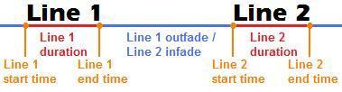
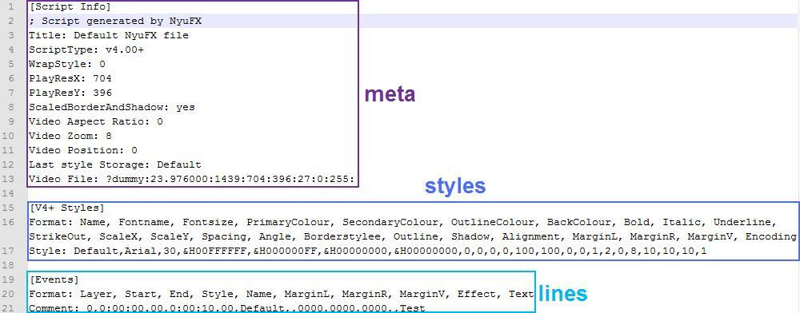

| meta | Script meta data table |
.comment | Script comments string |
.title | Script title string |
.script_type | Script version string |
.wrap_style | Line wrap style number |
.width | Video width number |
.height | Video height number |
.scaled_border_and_shadow | Border/shadow scaled by different real video and script resolution? boolean |
.ratio | Video ratio (seems to change nothing) number |
.zoom | Video zoom (just for editing) number |
.position | Current video frame for playback (just for editing) number |
.last_style | Last style storaged string |
.audio | Loaded audio file string |
.video | Loaded video file string |
| styles | Styles table |
[i] | Single style table |
.name | Style name string |
.fontname | Style font name string |
.fontsize | Style font size number |
.color1 | Style fill color string |
.alpha1 | Style fill alpha string |
.color2 | Style karaoke color string |
.alpha2 | Style karaoke alpha string |
.color3 | Style outline color string |
.alpha3 | Style outline alpha string |
.color4 | Style shadow color string |
.alpha4 | Style shadow alpha string |
.bold | Style font bold? boolean |
.italic | Style font italic? boolean |
.underline | Style font underlined? boolean |
.strikeout | Style font strikeouted? boolean |
.scale_x | Style horizontal scale number |
.scale_y | Style vertical scale number |
.spacing | Style text spacing number |
.angle | Style text z rotation number |
.borderstyle | Style border type -> opaque box (else rounded border)? boolean |
.outline | Style font border size number |
.shadow | Style font shadow offset position (down-right) number |
.alignment | Style video alignment number |
.margin_l | Style position offset from left video side number |
.margin_r | Style position offset from right video side number |
.margin_v | Style position offset from video top and bottom number |
.encoding | Style font encoding number |
| lines | Dialog lines table |
[i] | Single dialog line table |
.comment | Line is a comment? boolean |
.layer | Line layer number |
.start_time | Line start time (in milliseconds) number |
.end_time | Line end time (in milliseconds) number |
.mid_time | Line mid time (in milliseconds) number |
.duration | Line duration (in milliseconds) number |
.infade | Line infade duration (in milliseconds; first line = 1000.1) number |
.outfade | Line outfade duration (in milliseconds, last line = 1000.1) number |
.style | Line style name string |
.styleref | Line style table table |
.actor | Line actor string |
.margin_l | Line position offset from left video side number |
.margin_r | Line position offset from right video side number |
.margin_v | Line position offset from video top and bottom number |
.effect | Line effect description string |
.k_text | Line raw text string |
.text | Line stripped text string |
.i | Line index number |
.width | Line text width number |
.height | Line text height number |
.ascent | Line font ascent number |
.descent | Line font descent number |
.intlead | Line font internal lead number |
.extlead | Line font external lead number |
.x | Line text position horizontal (depends on alignment) number |
.y | Line text position vertical (depends on alignment) number |
.left | Line text position left number |
.center | Line text position center number |
.right | Line text position right number |
.top | Line text position top number |
.middle | Line text position middle number |
.bottom | Line text position bottom number |
.syls | Line sylables table |
[i] | Single line sylable table |
.i | Sylable index number |
.word_i | Sylable word index number |
.start_time | Sylable start time (in milliseconds) number |
.end_time | Sylable end time (in milliseconds) number |
.mid_time | Sylable mid time (in milliseconds) number |
.duration | Sylable duration (in milliseconds) number |
.text | Sylable text string |
.inline_fx | Sylable inline effect (marked as \\-EFFECT in karaoke-time) string |
.prespace | Sylable free space before text number |
.postspace | Sylable free space after text number |
.width | Sylable text width number |
.height | Sylable text height number |
.ascent | Sylable font ascent number |
.descent | Sylable font descent number |
.intlead | Sylable font internal lead number |
.extlead | Sylable font external lead number |
.x | Sylable text position horizontal (depends on alignment) number |
.y | Sylable text position vertical (depends on alignment) number |
.left | Sylable text position left number |
.center | Sylable text position center number |
.right | Sylable text position right number |
.top | Sylable text position top number |
.middle | Sylable text position middle number |
.bottom | Sylable text position bottom number |
.chars | Line characters table |
[i] | Single line character table |
.i | Character index number |
.syl_i | Character sylable index number |
.word_i | Character word index number |
.start_time | Character start time (in milliseconds) number |
.end_time | Character end time (in milliseconds) number |
.mid_time | Character mid time (in milliseconds) number |
.duration | Character duration (in milliseconds) number |
.text | Character text string |
.width | Character text width number |
.height | Character text height number |
.ascent | Character font ascent number |
.descent | Character font descent number |
.intlead | Character font internal lead number |
.extlead | Character font external lead number |
.x | Character text position horizontal (depends on alignment) number |
.y | Character text position vertical (depends on alignment) number |
.left | Character text position left number |
.center | Character text position center number |
.right | Character text position right number |
.top | Character text position top number |
.middle | Character text position middle number |
.bottom | Character text position bottom number |
.words | Line words table |
[i] | Single line word table |
.i | Word index number |
.start_time | Word start time (in milliseconds) number |
.end_time | Word end time (in milliseconds) number |
.mid_time | Word mid time (in milliseconds) number |
.duration | Word duration (in milliseconds) number |
.text | Word text string |
.prespace | Word free space before text number |
.postspace | Word free space after text number |
.width | Word text width number |
.height | Word text height number |
.ascent | Word font ascent number |
.descent | Word font descent number |
.intlead | Word font internal lead number |
.extlead | Word font external lead number |
.x | Word text position horizontal (depends on alignment) number |
.y | Word text position vertical (depends on alignment) number |
.left | Word text position left number |
.center | Word text position center number |
.right | Word text position right number |
.top | Word text position top number |
.middle | Word text position middle number |
.bottom | Word text position bottom number |
| |  |
|  | ||